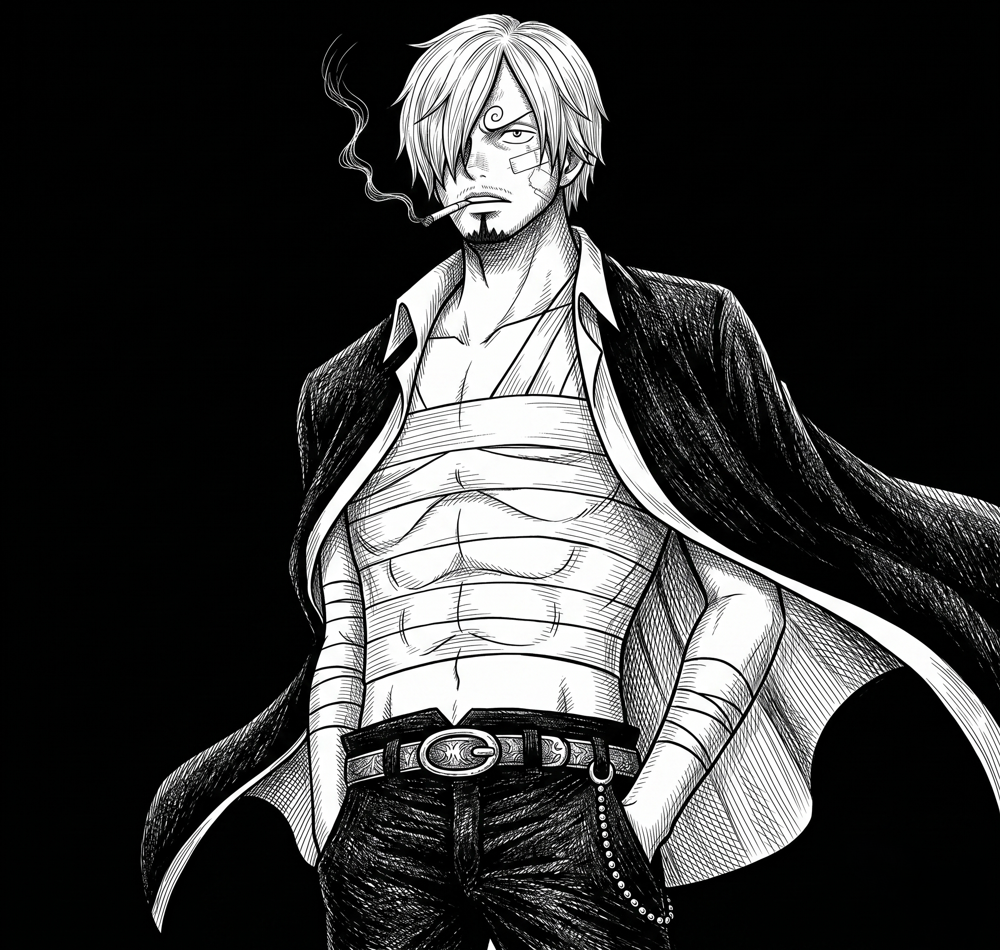

Sanji (サンジ, Sanji), born as Vinsmoke Sanji (ヴィンスモーク・サンジ, Vinsumōku Sanji) and also known as "Black Leg" Sanji (黒足のサンジ, Kuro Ashi no Sanji), is a fictional character in the One Piece franchise created by Eiichiro Oda. The character made his first appearance in the 43rd chapter of the series, which was first published in Japan in Shueisha's Weekly Shōnen Jump magazine on June 8, 1998. He is the fifth member of the Straw Hat Pirates and the fourth to join, serving as their cook. A native to the North Blue, Sanji grew up as part of the Vinsmoke family under his father Vinsmoke Judge, king of the fallen Germa Kingdom, and mother Vinsmoke Sora.[6] After leaving his abusive family and surviving a shipwreck, almost starving to death on a rock, he was taken under the wing of "Red Foot" Zeff,[7] a former pirate and owner of the floating restaurant Baratie who taught him cooking and his fighting style, which is characterized by the use of legs in combat, leaving his hands for cooking. Following a battle against Don Krieg, Sanji joins the Straw Hats in order to fulfill his dream of finding the All Blue, a mythical sea said to have fish from around the world. Despite his calm and rational nature, he is known for his constantly enamored behavior around beautiful women (especially Nami), to the point he refuses to attack women to the crew's and his own detriment
For more info visit this page